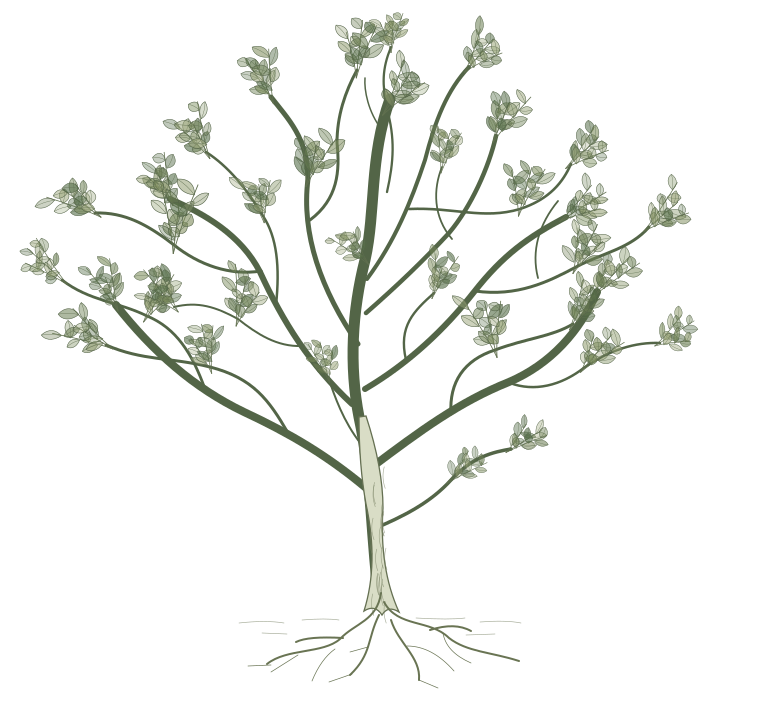
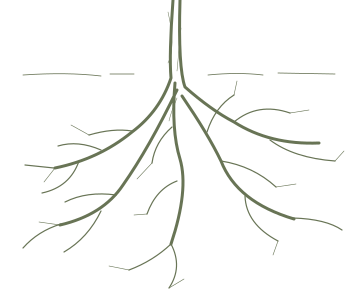

The Hachile Project
站群运行状态
等待检查数据
- 可访问
- —
- 异常
- —
- 待检查
- —

01认识我 02创作与项目 03社群与兴趣 04专题与档案各站状态
计划每 15 分钟检查一次。时间均为北京时间。
| 站点 | 检查结果 | 最近检查 |
|---|---|---|
| 等待检查数据。 | ||
故障记录
从首次探测失败，记录到下次探测恢复。
等待故障记录。
枝叶
站点目录
26 个站点，4 组分枝。
选择一个名字，去里面看看。
认识我
名字、经历，以及正在做的事。
创作与项目
写下的文字，做出来的东西。
- Blog文章、课程笔记与思考的归档地。blog.hachile.org
- HACH NewsAI 早报与 HACH 日报的每日归档，按栏目和日期阅读，支持文字条目与日报长图。news.hachile.org
- Dev开发项目展示：从工具、模拟器到地图与智能系统。dev.hachile.org
- Hachile Terminal用命令行查找站群里的文章、项目和图像，阅读正文或打开原站。terminal.hachile.org
- 循济 TongjiTap编排 Android 点击步骤、调节歌速、按屏幕状态切换 Wi-Fi。查看应用界面与使用指南，下载正式版 APK。tap.hachile.org
- Gallery图像、创作与收藏构成的小型视觉档案。gallery.hachile.org
- Tools常用在线工具与推荐资源的快捷入口。tools.hachile.org
- Hachile Status查看各站点的可访问性、最近检查时间和故障记录，浏览 Hachile 站群。status.hachile.org
- The Hachile Project浏览站群目录、阅读 Hachile 的宗旨，查阅历次更新。site.hachile.org
社群与兴趣
和朋友们相遇的地方。
- Groups校园与兴趣社群档案，以及重点社群的独立展览。groups.hachile.org
- Bot Lab小五、Ponylonia 与 Hachile 等 QQ 机器人的展示空间。bot.hachile.org
- Sky以小马国地图展开的个人主题站，认识 Pegasus Bluie 的世界。sky.hachile.org
- 云中城蓝色小天马天蓝晨风的个人主页。在云中城探索场景，翻阅小马画册，找到常去的站点。cloud.hachile.org
- Pony天蓝晨风 Skyblue Mornbreeze 的小马个人主页，介绍自己、创作和喜欢的音乐。pony.hachile.org
- Brony Map以隐私保护为前提，探索同城小马迷分布的地图项目。bronymap.hachile.org
- Furpony Institute研究 Furry 与 Brony 文化异同及关系的三语博客，欢迎文化观察、文章投稿与讨论。furpony.hachile.org
专题与档案
留下来，留给以后再看。
站群目录同步自 site.hachile.org。
根
为什么
保持连接。
Hachile 的宗旨

10+个网络身份，100+个网络社群，1000+个网络好友，10000+覆盖人群，我需要一个统一的系统来理清我的网络身份
我享受这种连接的过程，从小到大，无论是在班级建立学生组织的尝试，还是小天才手表群聊里的民主实践，我都喜欢把不同社群的人们连接起来，让信息流动
连续性也是 Hachile 的宗旨。从小到大，我和许多朋友、同学失去了联系；我希望大家能随时重新找到彼此的联系方式。朋友有时只同行几个月，早晚会分离，所以我建立这些社群，让大家仍有地方相聚、聊天，让一段关系有机会一直延续下去。
另外我也在将自己不断数字化，让自己的信息触手以扁平化的形式抵达互联网的各个角落
我无处不在我无所不知
年轮
更新日志
站群的生长记录
与 Home 同步
Hachile 站群运行状态页上线
在 status.hachile.org 查看各站点的可访问性、最近检查时间和故障记录，也可以浏览 Hachile 的树形站点目录、宗旨和更新日志。
同济野史增补百则校园掌故
同济野史新增 100 篇校园轶事，收录吴淞时期的学生生活、四平路的小邮局和学生自制的网络作品，每篇附有来源和置信度。
云中城上线
在 cloud.hachile.org 探访云中城，认识蓝色小天马天蓝晨风，翻阅小马画册，逛逛常去的站点。
Gunpowder Lab 上线
在 1.hachile.org 了解 Gunpowder 的研究方向、开发项目和社群，也可以从作品介绍前往博客、图库与各个个人站点。
同济野史上线
在 tjwild.hachile.org 收录 19 篇同济校史与校园轶事，逐段列出 32 份中外来源，提供置信度说明、全文检索和校史大事记。
翻看更早的年轮
国豪野史扩写与八一风波收录
扩写 ghc.hachile.org 的33篇现有野史，补充时间节点、经过与史料边界；依据匿名化群聊新增八一新生群风波，区分原群转发、反串与道歉文本的传播。
Dev 补充循济官网与交流群
为 dev.hachile.org 的循济 TongjiTap 项目加入 tap.hachile.org 官网入口和 QQ 交流群 934139029，同步中英文展示并刷新全部项目的 GitHub Star 排序。
循济 TongjiTap 官网发布
在 tap.hachile.org 查看循济的四个 Android 界面、下载正式版 APK，并查阅点击编排、音乐调速和 Wi-Fi 切换的使用指南。
首页加入 Terminal Me 按钮
将 Home 首页两个引导按钮合并为指向 terminal.hachile.org 的 Terminal Me，并将顶部 Dev 入口恢复为 dev.hachile.org，同步中英文和手机版。
站群命令行终端上线
在 terminal.hachile.org 用 Linux 风格命令浏览站点目录、阅读公开文章和项目、跨站搜索正文，并打开原站与媒体链接。
Dev 收录 hanhua 汉化工具
在 dev.hachile.org 加入 hanhua，提供游戏与影视汉化介绍、《The Question》中文实机截图和演示站入口，同步中英文文案并刷新 14 个项目的 GitHub Star 排序。
小马国地图动效更新
瀑布水流沿两级岩壁落下，烟从火山口升起。列车沿铁轨转弯，帆船和浮云的轮廓与底图衔接。
Ponylonia 项目手记改版
重新设计 ponylonia.hachile.org，以暖白纸面、深蓝星空和原创双翼星图呈现 Bot、个人穿越系统愿景与 The Hachile Project；保留全部站点入口和 QQ 联系方式，加入号码复制与手机适配。
Furpony Institute 文化刊物改版
重设计 furpony.hachile.org 的三语首页与文章页，采用钴蓝暖橙配色、大字号刊头和原创狐狸小马插画；保留全部原文、译文及投稿入口，补齐仓库说明与代码许可证。
Research 成果索引改版
research.hachile.org 首页采用锂枝晶模拟图。八项成果可在索引中展开展示，也可按国家级大创项目或在投论文筛选。
Pony 主页温馨改版与英文版
统一 pony.hachile.org 的中文字体，英文使用 Equestria，调整为浅色手帐风格并新增 /en/ 英文页；修复域名证书并开启 HTTPS 自动跳转，保留音乐与桌宠交互。
Site 树主题改版
以植物手记风格重做 site.hachile.org，加入可点击的树形分组、枝条式站点目录与年轮更新日志，保留全部站点入口和宗旨原文，适配手机与键盘操作。
Dev 更新 TapLoop 轻循
在 dev.hachile.org 将 Tongji TapLoop 的空仓库占位更新为 Android 点击辅助工具介绍，加入真实界面截图，同步中英文文案并刷新项目 Star 排序。
新增济莫聚餐群
在 groups.hachile.org 的校园与兴趣分类加入济莫聚餐群 1059104967，分类增至 34 个，目录增至 109 个 QQ 群，网络社群总数更新为 113 个。
Dev 项目展示重制
重制 dev.hachile.org 的项目展示，使用项目截图与专属封面；调整项目名单，取消 IASR 置顶，并在每次发布时更新 GitHub Star、按数量排序。保留中英文切换与手机适配。
CV 补充采访报道与项目源码
在 cv.hachile.org 增加两篇采访与报道入口，为数字孪生、IASR、AegisDrive、座椅压力分析、高校教师信息系统和锂枝晶模拟项目补充 GitHub 链接，同步中英文页面。
Tools 增加站内搜索和学习资源
将 Bing 搜索改为站内工具筛选，更新导航图标，并收录编程、人工智能、科研与校园开发资源。
开发项目入口接入 Forkfolio
将 Home 首页的 Dev 快捷入口指向 gpddev.forkfolio.dev，并在个人站点中新增 Forkfolio 卡片，同步中英文和手机版。
CV 补充大一综合成绩排名
在 cv.hachile.org 的个人信息中补充大一阶段学院排名前5%、专业排名前10%，并同步英文版。
Tools 收录 USAddressGen
在 tools.hachile.org 的地图与网络栏目加入 USAddressGen，提供美国地址测试数据生成入口。
发布高校有偿投票活动记录
在 blog.hachile.org 发布高校有偿投票活动的脱敏记录，保留活动规则、作者观察与建议，文章日期为 2026 年 3 月 15 日。
发布《外川沙行纪》
在 blog.hachile.org 发布《外川沙行纪——致愿意追寻宁静与伟大的我们》，保留正文、四张配图和图注，文章日期为 2025 年 11 月 22 日。
发布未来技术班公众号停运公告存档
在 blog.hachile.org 存档《同济大学未来技术班公众号将停止运营》，保留原发布日期、正文和配图。
Research 科研与项目成果页改版
将 research.hachile.org 重做为科研与项目成果展示页，收录八项成果，展示职责、技术方法、奖项与国家级大创项目状态，标注论文在投，并提供九个项目仓库链接与响应式成果目录。
CV 增加 Research 入口
在 cv.hachile.org 的项目经历中加入 research.hachile.org 入口，并同步中英文页面。
Tools 收录 HACH News
在 tools.hachile.org 的学习与写作栏目加入 HACH News，提供 AI 早报与 HACH 日报入口。
Home 加入 HACH News 入口
在 Home 的社群与工具栏目加入 news.hachile.org，提供 AI 早报与 HACH 日报归档入口，并同步中英文和手机版。
HACH News 日报归档站上线
新建 news.hachile.org，提供 AI 早报与 HACH 日报的栏目和日期归档，为后续 Muse 自动发布预留内容格式，支持文字条目、来源链接与日报长图。当前保留空状态，不发布示例新闻。
Tools 收录 TypeBox
在 tools.hachile.org 的学习与写作栏目加入 TypeBox，提供 Markdown 编辑与格式工具入口。
社群卡片连续排列
移除 Home 社群分类标题与侧边栏子项，将 23 个群聊和全部社群入口合并为同一个连续网格，保持原有顺序与图标。
主页社群精选与微信号更新
Home 的社群展示精简为 23 个，更新社群介绍和三个群名，新增高亮的全部社群入口，并将微信号改为 gpddev。
补充社群研究方向
在 groups.hachile.org 首页介绍中加入对社群民主实践、QQ群正规化与高价值社群建设的研究方向，保留原有段落样式。
发布锂枝晶论文阅读笔记
在 blog.hachile.org 发布《锂枝晶三篇论文初步阅读笔记》，保留相场模型、贝叶斯参数优化、机器学习辅助反向设计的阅读理解、待学习问题和三篇论文的 DOI 链接。
博客首页精简与博客园旧文迁移
精简 blog.hachile.org 的导航和首页标题，缩小个人头像，将主站入口指向 home.hachile.org，置顶文章改名为《欢迎来到我的博客》；迁移博客园全部 6 篇公开随笔，保留原始发布日期、代码和 4 张插图。
发布英国研学感言与牛津游记
在 blog.hachile.org 发布《英国研学个人感言》和《草坪、彩虹，和一座没有围墙的大学》，保留游记中的两张风景照片。
新增炒股群
在 groups.hachile.org 的校园与兴趣分类加入炒股群 1040957207，分类增至 33 个，目录增至 108 个 QQ 群，网络社群总数更新为 112 个。
发布反向传播与 Transformer 笔记
在 blog.hachile.org 发布反向传播与 Transformer 学习笔记，保留原文并按反向传播、词嵌入、注意力和多层感知器分节排版。
Furpony Institute 三语文化博客上线
新建 furpony.hachile.org，提供中、英、德三语首页与文章页，发布《消费、兽设与归属》，加入邮箱与 QQ 投稿联系入口，并收录到站点目录。
国豪野史增加 QQ 交流群
在 ghc.hachile.org 的页脚及关于页面公布国豪野史 QQ 交流群 1109714588。
新增同济薄肌俱乐部与 Furpony Institüt
在 groups.hachile.org 的校园与兴趣分类加入同济薄肌俱乐部 1128552670，在 MLP交流群分类加入 Furpony Institüt 1130961239；合计 107 个 QQ 群、111 个网络社群。
发布视频异常检测综述笔记
在 blog.hachile.org 发布从 DNN 到 MLLM 的视频异常检测综述阅读笔记，整理方法分类、异常理解和待核对问题。
新增同济QQbot交流群
在 groups.hachile.org 的校园与兴趣分类加入同济QQbot交流群 1128188987，分类增至 31 个，目录增至 105 个 QQ 群，网络社群总数更新为 109 个。
补齐 AI 二群群号
补齐同济AI大模型交流二群群号 832504586，同步目录与展览页的复制入口；三群（学术讨论群）保留 689315680，四群保留 1127773531，社群总数不变。
新增小马厨艺交流群
在 groups.hachile.org 的 MLP交流群分类加入小马厨艺交流群 1130319686，分类增至 29 个，目录增至 104 个 QQ 群，网络社群总数更新为 108 个。
确认 AI 学术讨论群群号
确认 689315680 为同济AI大模型交流三群（学术讨论群），同步目录和展览页；二群群号暂待补充，避免重复使用三群号码。社群总数不变。
社群分类整理与 AI 群用途更新
在 groups.hachile.org 按名单调整校园、早期与 MLP 分类，新增两个小五代管群；区分 AI 交流、学术讨论与同济内部群，将 1127773531 更正为四群，三群群号待补充。合计 103 个 QQ 群、107 个网络社群。
重点社群展示更新与 AI 群扩展
将 groups.hachile.org 的同济国豪交流社群与同济AI大模型交流社群均更新为 2000+ 人，补充组成介绍，第三项改为“拭目以待”；收录 AI 二群和三群，合计 100 个 QQ 群、104 个网络社群。
新增小马哲学交流群
在 groups.hachile.org 的小马社群目录加入小马哲学交流群 451879743，小马社群增至 25 个，QQ 群增至 98 个，网络社群总数更新为 102 个。
新增同济大学可爱南梁研究中心
在 groups.hachile.org 加入同济大学可爱南梁研究中心 1129801220，目录增至 97 个 QQ 群，网络社群总数更新为 101 个。
同济账号证明精简为独立站点
新建 tj.hachile.org，仅保留生成证明码和验证证明码；不加入校园导航、搜索或其他栏目。复用匿名一次性证明的安全后端，认证待学校批准后开放；站点目录入口同步调整。
同济导航与账号证明模板上线
新建 tongji.hachile.org，参考 USTC 导航整理校园服务、学习与社群入口，加入一次性同济账号证明的安全后端模板；正式认证等待学校应用接入批准后开放，并同步收录到站点目录。
网络社群总数更新为 100 个
将微信公众号、Discord 社群、Telegram 群和 QQ 频道纳入 groups.hachile.org 总数统计，合计 96 个 QQ 群与 4 个跨平台社群。
同济 AI 大模型交流群人数更新
将 groups.hachile.org 首页与重点社群展览中的同济AI大模型交流群展示人数更新为 1000 人。
新增 tongji.qq.life 开发群
在 groups.hachile.org 的新增收录目录加入 tongji.qq.life开发群 1121262961。
新增四个小马交流群
在 groups.hachile.org 的小马社群目录加入小马学习、科研、竞赛和实习交流群。
新增小马画画群与介绍格式调整
在 groups.hachile.org 的小马社群目录加入小马画画群 943571955，并将介绍末句改为“我无处不在，我无所不知。”，采用与上文相同的段落样式。
社群首页补充个人介绍与宗旨
在 groups.hachile.org 开头加入网络身份、社群与传播规模介绍，并补充连接、连续性和自我数字化的个人表达。
社群目录补充九个 QQ 群
在 groups.hachile.org 新增九个 QQ 群，并注明部分群虽已转让群主，仍由我实际管理。
新增河大附中 QQ 频道
在 groups.hachile.org 加入河大附中 QQ 频道，腾讯频道号 hdfzpd2222。
新增 wplace 交流群
在 groups.hachile.org 的新增收录目录加入 wplace 交流群 1025330162。
恢复原有中文字体设置
撤销 Home 全站中文字体统一改动，恢复此前的字体搭配；保留个人站点中的 Site 入口。
个人站点加入 Site 并统一中文字体
在 Home 的个人站点加入 site.hachile.org，并将全站中文统一为首页介绍段落所用字体。
其他身份卡片字号调整
将 Home 其他身份卡片的说明和 QQ 号码文字缩小至原大小的 60%，身份名称保持不变。
新增香港小马交流群
在 groups.hachile.org 的小马社群目录加入香港小马交流群 1126362557。
社群目录新增四个交流群
在 groups.hachile.org 收录小马与furry文化研究群、pony hypnosis交流群、小马tulpa交流群和清醒梦交流群。
网页版桌宠动作与尺寸修正
修正 pony.hachile.org 桌宠静止动作漂移，行走保持高度、拖拽使用飞行动作；全部动作支持左右朝向并保留最后朝向，按 GIF 原始像素尺寸显示，取消动作切换和手机端缩放。
社群档案加入朋友评价
在 groups.hachile.org 首页加入一段 2025 年的群聊评价，并注明当时的建群与活跃群数量。
Pony 加入站点目录
将 pony.hachile.org 收录到 The Hachile Project 的站点目录，并约定今后新站上线时同步收录。
天蓝晨风的小马个人主页上线
新建 pony.hachile.org，以纵向滚动页面展示个马简介与作品入口，加入逐层渐显动效、可拖动的桌面小马及五首音乐的 Bandcamp 官方播放器。
Sky 英文字体恢复常规字重
英文模式的 Equestria 字体取消浏览器模拟加粗，桌面和手机端统一使用常规字重。
小马国地图更新背景与海浪
采用新背景和提供的小船图片，从原地图提取三种海浪，让浪纹在海面随机从左向右漂移。
社群目录补充国豪26级学生群
在 groups.hachile.org 加入同济大学国豪书院26级学生群，并标注暂不开放加入。
小马国地图恢复原画
改用 newnewmap 原图，不再处理海浪；恢复原版火山烟和帆船，统一中文字体，并按地图上的铁路重新校准列车路线。
小马国地图动效细节优化
清理地图中的静态海浪和火山残烟，调整帆船位置，并让火车头及车厢分别贴合铁路曲线行驶。
Hachile 宗旨补充连续性
在 The Hachile Project 的宗旨中加入维系旧友联系、让社群关系延续的理念。
Sky 地图动画贴合原画
缩小帆船，将原图海浪改为漂移效果，替换火山烟雾和火车，并让列车沿铁路在各站间行驶。
社群目录新增交流群
在 groups.hachile.org 补充五个 QQ 交流群，并更新 /mlpol/ 备用群名称。
Hachile Bot 交流群入口
在 bot.hachile.org 的 Hachile 卡片中加入 QQ 交流群 822082293，并支持点击复制群号。
Ponylonia 项目交流群上线
在 ponylonia.hachile.org 增加 The Ponylonia Project 交流群 291927355。
Sky 左下角加入单曲播放器
使用 Bandcamp 官方嵌入播放器在 Sky 地图左下角播放《Equestria's Finest》，手机版同步加入，并更新隐私说明。
Sky 增加官方音乐入口
在 Sky 地图右下角和手机版加入五首歌曲的 Bandcamp 官方播放入口，不在本站托管音频。
Hachile 宗旨展示
在 The Hachile Project 首页加入网络身份、社群与连接理念的宗旨说明。
Sky 地图场景动画扩展
为海面加入漂移浪纹，让火山烟雾与尼亚加拉瀑布流动，并让火车定时沿铁路驶向巴尔的马。
Sky 地图新增三处站点入口
在水晶城、狮鹫岩与苹果鲁萨加入站点链接，并从底图移除旧罗盘、帆船、红箭头和红龙。
The Hachile Project 展示页上线
新建 site.hachile.org，汇总 Hachile 站群的站点介绍、访问入口和 Home 更新日志。
Project Ponylonia 展示站上线
新建 ponylonia.hachile.org，展示机器马 Bot、个人穿越系统愿景及 Hachile Project。
门户入口说明补充
扩展 Hachile Portal 简历与个人主页入口的说明文字，并适配卡片高度。
Sky 地图动态效果
为小马国地图加入漂移云朵与摇摆帆船图层，并遵循系统减少动态效果设置。
Home 卡片排版与身份补充
统一常用站点卡片字号与文字间距，加入 Pegasus Bluie 身份，并将五张身份卡在桌面端排成一行。
Bot 站点增加部署配置项目
在 bot.hachile.org 的机器人展示下方加入 config-for-qq-bot 项目入口。
门户新增快速了解入口
在 Hachile Portal 中英文桌面版与手机版增加通往 hachile.org/gunpowder 的入口，并恢复此前误改的入口说明。
Sky 小马谷增加社群与 Bot 入口
在 Sky 的小马谷名册最前面加入 groups.hachile.org 和 bot.hachile.org 链接，并同步手机版。
Sky 地图新增工具箱入口
在 Sky 地图的巴尔的马新增 tools.hachile.org 工具箱入口，并同步桌面与手机页面。
画廊方形网格与搜索
将画廊全部 64 张图片合并为方形缩略图网格，桌面端每行五张，并新增图片搜索与待补充说明。
画廊返回入口调整
将 gallery.hachile.org 的两个返回入口改为 home.hachile.org，并移除页脚的 ALPHA 标识。
画廊图片扩充
将 pic 中的 55 张图片加入 gallery.hachile.org，保留原有作品并支持点击放大。
独立手机版上线
新增无侧边栏的中英文手机版页面，并在左上角站点名称下方显示 home.hachile.org。
CV 英文版上线
移除 cv.hachile.org 顶部的旧返回入口，改为中英文切换，并新增完整英文简历页面。
社群档案补充
更新 groups.hachile.org 的社群目录，补充 QQ 群及跨平台社群入口。
社群与机器人账号入口补充
在社群列表下新增 groups.hachile.org 入口，并在其他身份下新增 bot.hachile.org 入口。
网络社群档案上线
新建 groups.hachile.org，汇总旧站公开的 QQ 群、微信公众号名称，并为三个重点社群制作展览页。
门户页标题与入口卡片调整
为 Hachile Portal 添加中英文欢迎标题，缩小简介文字，并降低三个入口卡片的高度。
主页头像与自我介绍调整
缩小并重新定位主页头像，移除头像渐变和角标；将 Sky 归入个人站点，并更新自我介绍与兴趣文字。
入口页名称更新
将 Hachile 入口页的中英文桌面版与手机版浏览器标签名称统一改为 Hachile Portal。
Sky 地图入口调整
将 Sky 地图的坎特洛特入口改为按语言跳转至 home.hachile.org 对应页面。
头像环带渐变调整
保留头像图片完整呈现，仅在左侧扇环形成从深色到白色的渐变；移动端独立展示完整头像。
CV 页面主页入口调整
将 cv.hachile.org 页脚的个人主页链接更新为 home.hachile.org。
入口页文字调整
移除 Hachile 中文入口页桌面版和手机版的顶部标识文字。
图标与头像细节调整
头像沿圆周渐隐，更新联系方式和社交平台图标，并补充社群入口。
站点与社群展示更新
新增 Tools 与社交平台入口，更新首页头像和社群卡片布局。
首页布局调整
精简导航与常用站点展示，放大首页头像，并把更新日志移至讨论区下方。
双语界面与站内讨论区
更名为 Gunpowder Central，增加亮/暗模式、英文页面、图标与站内讨论区。
第一个正式版
Hachile.org 个人站群的第一个正式版。Home 采用深色文档式布局，汇总个人介绍、站点导航、常用资源、社群资料、联系方式和讨论入口。
最早的版本留在 old.hachile.org。